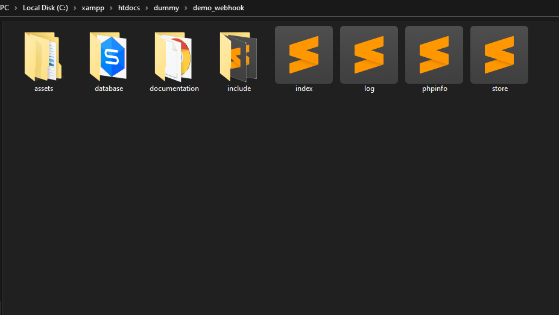
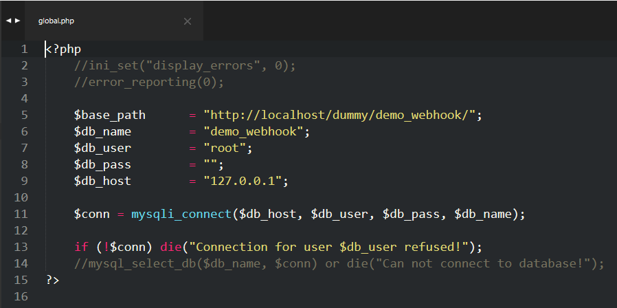
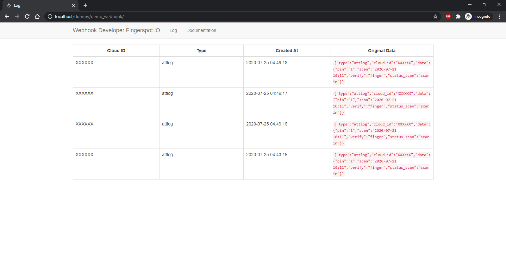

Thank you for purchasing our product. If you have any questions that are beyond the scope of this help file, please feel free to contact us.
Most of the questions are already answered in the FAQ's:
https://www.apachefriends.org
Linux installation refer to this following FAQs https://www.apachefriends.org/faq_linux.html
Windows installation refer to this following FAQs https://www.apachefriends.org/faq_windows.html
OS X installation refer to this following FAQs https://www.apachefriends.org/faq_osx.html
/demo_webhook
(Sample Pages...)
/assets
/css
/font
/image
/js
/database
demo_webhook.sql (Sql file import to your database server)
/include
function.php (Customize PHP function for this sample)
global.php (Customize global setting for this sample)
head.php
After you download sample code from our website "http://developer.fingerspot.io/ extract the file into your web server and you can see the files looks like files structure in the page before.


$base_path customize this line with your sample code url.
$db_name customize this line with your database name.
$db_user customize this line with your database user.
$db_pass customize this line with your database user password.
You can view the log information of webhook in this Log menu.
